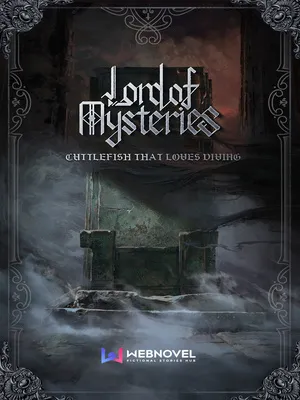

Sumber: LOTM Fandom Wiki
Lord of The Mysteries merupakan webnovel fantasi barat (Xuanhua) yang ditulis
oleh penulis asal Cina, Cuttlefish That Loves Diving.
Path of The Devine, atau pathway, berhubungan dengan serangkaian 10 formula ramuan bernama
yang memberikan akses ke kekuatan supranatural atau mistis pada novel Lord of The Mysteries.
Begitu seseorang meminum ramuan, mereka dikatakan telah menjadi Beyonder path itu. Setiap
path termasuk dalam grup yang berisi satu atau lebih path yang berdekatan, yang mana Beyonder
dapat beralih dengan aman di Sequence Tinggi. Di akhir setiap path, hanya satu Beyonder yang
dapat mencapai keilahian dan menjadi Great Old One di pathway tersebut.
Di Bumi, terdapat 22 Pathway Standar, yang masing-masing memiliki 10 level sequence dari sequence terendah 9
hingga sequence tertinggi 0, dengan total 220 sequence berbeda. Setiap sequence berisi kemampuannya sendiri,
dan setiap pathway memiliki otoritasnya sendiri. Pathway tidak terbatas pada menyediakan kemampuan ofensif
atau defensif saja, tetapi memperluas cakupan dan variasi seiring kemajuan dalam sequence. Pathway yang berbeda
dapat melakukan hal yang sangat berbeda, mulai dari kemampuan utilitas seperti ramalan atau pembuatan peralatan
hingga serangan yang kuat seperti pengendalian cuaca atau roh.
Lord of Mysteries adalah gelar Above the Sequence dari Pathway Fool, Door, dan Error. The Great Old One merupakan salah satu dari The Three Pillars. Ini juga merujuk pada The Great Old One yang paling aktif di Bumi dari Era Modern (pra-kiamat) hingga pertengahan Era Pertama, dan mantan pemilik Kastil Sefirah. "Dia" juga disebut sebagai "The Celestial Worthy of Heaven and Earth" di Benua Barat.
God Almighty adalah gelar Above The Sequence untuk Pathway Hanged Man, Sun, Visionary, Tyrant, dan White Tower. God Almighty ini adalah salah satu dari Three Pillars. Ini juga mengacu pada God Almighty yang asli, makhluk Above The Sequence yang berperang dengan The Celestial Worthy of Heaven and Earth pada periode awal dan pertengahan Era Pertama. Adam dan Sasrir menyebutnya sebagai Primodial One. Menurut penelitian Ancient Sun God, menjadi True God dari Pathway Visionary atau Hanged Man dan mendapatkan kendali awal atas The Chaos Sea sebelum mengambil kembali Karakteristik keunikan dan Sequence 1 Beyonder yang tersisa adalah jalan termudah untuk maju menuju God Almighty. Dan dalam hal ini, ada yang lebih istimewa dari Visionary daripada The Hanged Man, yaitu kemampuan untuk “Menciptakan” Uniquenesses Pathway lain untuk sementara menjadi Half a Great Old One.
Eternal Darkness gelar Above The Sequence dari Pathway Darkness, Twilight Giant, dan Death. Above The Sequence ini adalah separuh dari 4th Pillar yang tersembunyi dan separuh lainnya berhubungan dengan Calamity of Destruction, dan keduanya tidak boleh digabungkan kecuali seseorang ingin mengakhiri seluruh alam semesta. Karena keberadaan 4th Pillar, pathway Eternal Darkness dan Calamity of Destruction tidak dapat ditukar. Namun dalam hal ini, kenaikan Sequence tersebut tidak lagi menjadi Great Old One, kecuali seseorang dapat memisahkan karakteristik Beyonder sebelumnya.
Calamity of Destruction adalah gelar Above The Sequence dari Pathway red Priest dan Demoness. Above The Sequence ini adalah separuh dari 4th Pillar yang tersembunyi dan separuh lainnya berhubungan dengan Eternal Darkness, dan keduanya tidak boleh digabungkan kecuali seseorang ingin mengakhiri seluruh alam semesta.Karena keberadaan 4th Pillar, Pathway Eternal Darkness dan Calamity of Destruction dapat ditukar. Namun dalam hal ini, kenaikan Sequence tersebut tidak lagi menjadi Great Old One, kecuali seseorang dapat memisahkan karakteristik Beyonder dari sebelumnya.
Demon of Knowledge adalah gelar Above The Sequence dari Pathway Hermit dan Paragon.
Key of Light adalah gelar Above The Sequence dari Pathway the Wheel of Fortune. The Key of Light’s melambangkan kemungkinan nasib seseorang dan melambangkan kekacauan.
Note that due to the existence of The Fourth Pillar, both the Eternal Darkness group and Calamity of Destruction group are exchangeable. However, doing so leaves one unable to ascend to a Great Old One safely, unless one separates the previous pathways' characteristics.
| Great Old One | Above The Sequence | Lord of The Mysteries | God Almighty | Eternal Darkness | Calamity of Destruction | Demon of Knowledge | Key of Light | |||||||||||
|---|---|---|---|---|---|---|---|---|---|---|---|---|---|---|---|---|---|---|
| True God | 0 | Fool | Door | Error | Visionary | Hanged Man | Sun | Tyrant | White Tower | Darkness | Death | Twilight Giant | Red Priest | Demoness | Paragon | Hermit | Wheel of Fortune | |
| Sequence Tinggi (Demigod) | Angel | 1 | Attendant of Mysteries | Key of Star | Worm of Time | Author | Dark Angel | White Angel | Thunder God | Omniscient Eye | Knight of Misfortune | Pale Emperor | Hand of God | Conqueror | Apocalypse | Illuminator | Knowledge Emperor | Snake of Mercury |
| 2 | Miracle Invoker | Planeswalker | Trojan Horse Destiny | Discerner | Profane Presbyter | Lightseeker | Calamity | Wisdom Angle | Servant of Concealment | Death Consul | Glory | Weather Warlock | Catastrophe | Knowledge Magister | Sage | Soothsayer | Saint | 3 | Schoolar of Yore | Wanderer | Mentor of Deceit | Dream Weaver | Trinity Templar | Justice Mentor | Sea King | Cognizer | Horror Bishop | Ferryman | Silver Knight | War Bishop | Unaging | Archane Scholar | Clairvoyant | Chaoswalker |
| 4 | Bizarro Sorcerer | Secret Sorcerer | Parasite | Manipulator | Black Knight | Unshadowed | Cataclysmic | ZProphet | Nightwatcher | Undying | Demon Hunter | iron-Blooded Knight | Despair | Alchemist | Mysticologist | Misfortune Mage | ||
| Sequence Menengah | 5 | Marionettist | Traveles | Dream Stealer | Dream Walker | Shepherd | Priest of Light | Ocean Songster | Mysticism Magister | Nightmare | Spirit Medium | Weapon Master | Pyromaniac | Witch | Appraiser | Warlock | Lucky One | |
| 6 | Marionettist | Traveles | Dream Stealer | Hypnotist | Rose Bishop | Notary | Wind-blessed | Polymath | Soul Assurer | Spirit Guide | Dawn Paladin | Conspirer | Pleasure | Machinery Specialist | Scrolls Professor | Calamity Priest | ||
| 7 | Marionettist | Traveles | Dream Stealer | Psychiatrist | Shadow Ascetic | Solar High Priest | Seafarer | Detective | Nightmare | Spirit Medium | Weapon Master | Pyromaniac | Witch | Appraiser | Warlock | Lucky One | ||
| Sequence Bawah | 8 | Clown | Trickmaster | Swindler | Telepathis | Listener | Light Supplicant | Folk of Rage | Student of Ratuicination | Midnight | Gravedigger | Pugilist | Provoker | Instigator | Archaeologist | Melee Scholar | Robot | |
| 9 | Seer | Apprentice | Marauder | Spectator | Secrets Supplicant | Bard | Sailor | Reader | Sleepless | Coarpse Collector | Warrior | Hunter | Assassin | Savant | Mystery Prayer | Monster | ||
| Great Old One | Above The Sequence | Circle of Inevitability | Mother Goddess of Depravity | Mother Tree od Desire | |
|---|---|---|---|---|---|
| True God | 0 | Ø | Ø | Ø | |
| Sequence Tinggi (Demigod) | Angel | 1 | Ø | Ø | Ø |
| 2 | Ø | Ø | Ø | Saint | 3 | Sufferer | Ø | Ø |
| 4 | Circle Inhabitant | Evil Overlord | Ø | ||
| Sequence Menengah | 5 | Fate Appropriator | Banshee | Fallen Tree Spirit | |
| 6 | Ascetic | Sower | Recipient | ||
| 7 | Contractee | Heretic Spellmaster | Actor | ||
| Sequence Rendah | 8 | Alms Monk | Gardener | Sex Addict | |
| 9 | Dancer | Villain | Scrooge | ||